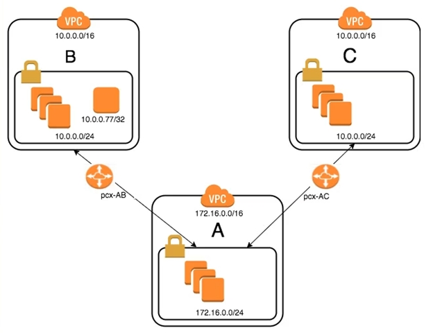

최근 인수를 통해 조직이 성장했습니다. 구매한 회사 중 두 곳은 동일한 IP CIDR 범위를 사용합니다. AnyCompany A(VPC-A)가 AnyCompany B(VPC-B)의 IP 주소가 10.0.0.77인 서버와 통신할 수 있도록 허용하는 새로운 단기 요구 사항이 있습니다. AnyCompany A는 AnyCompany C(VPC-C)의 모든 리소스와도 통신해야 합니다. 네트워크 팀에서 VPC 피어 링크를 생성했지만 VPC-A와 VPC-B 간의 통신에 문제가 있습니다. 조사 결과 팀에서는 VPC의 라우팅 테이블이 잘못된 것으로 판단했습니다.
AnyCompany A가 AnyCompany B의 데이터베이스 외에 AnyCompany C와 통신할 수 있도록 하는 구성은 무엇입니까?
코멘트
LCC92
높은 투표율 1년, 10개월 전awsexamprep47
높은 투표율 1년, 11개월 전스카이제로Zx
가장 최근 1개월, 4주 전evargasbrz
8개월 전강타모
1년, 2개월 전AzureDP900
1년, 8개월 전왜아이언맨인가?
1년, 10개월 전와이웽
1년, 10개월 전카리스비
1년, 10개월 전니틴즈
1년, 11개월 전